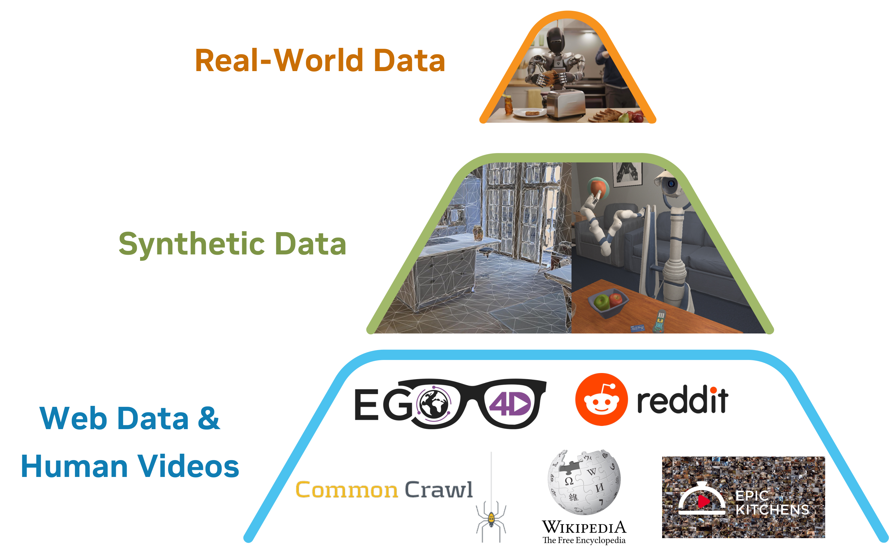
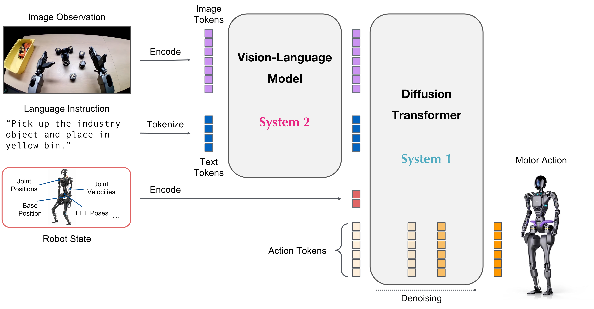
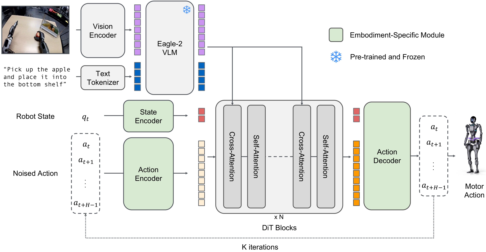
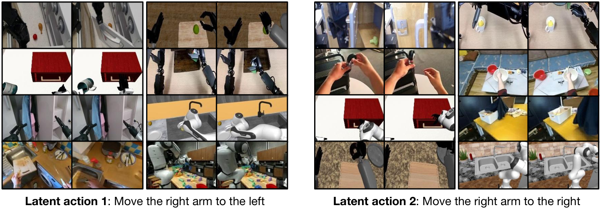
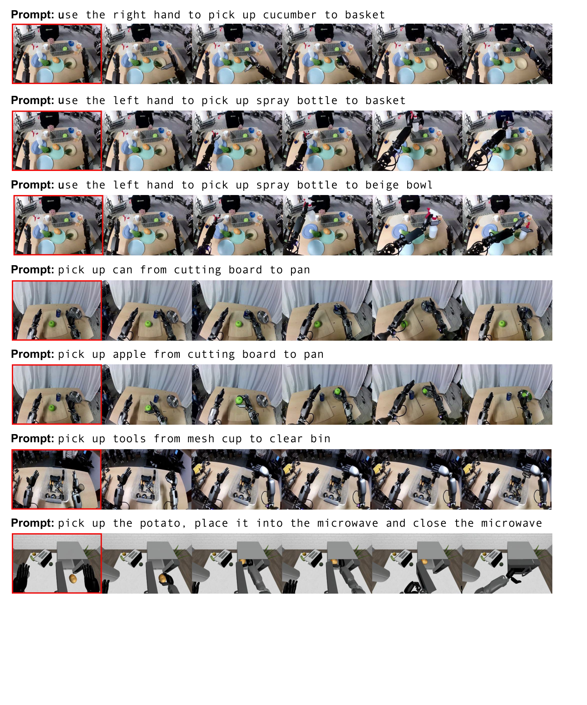
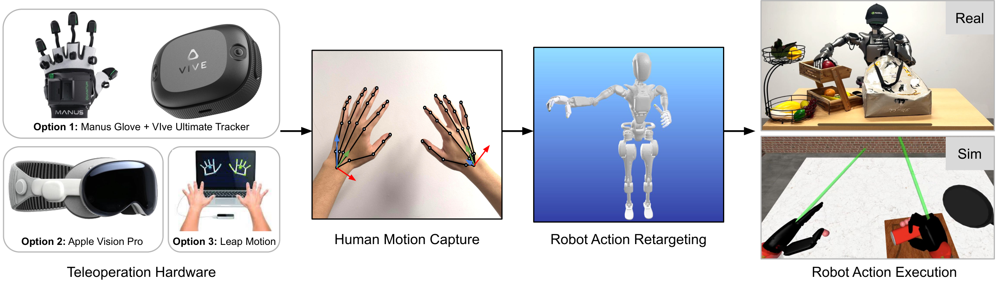
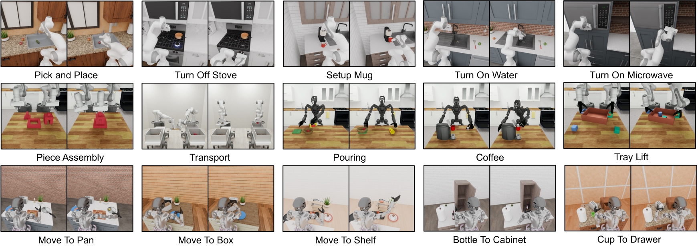
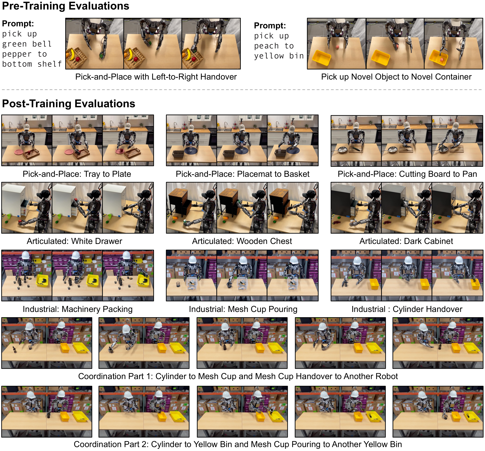
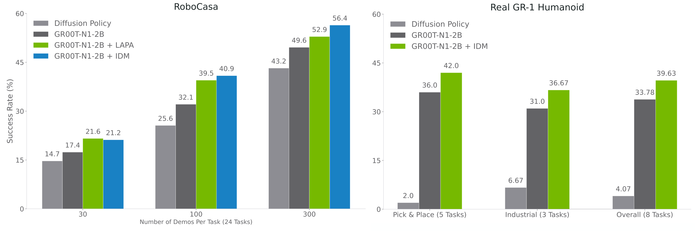

P6. GR00T N1: An Open Foundation Model for Generalist Humanoid Robots¶
0. 읽기 전 약어 및 핵심 용어¶
이 문서를 읽기 전에 아래 약어와 용어를 먼저 정리한다. 이후 본문에서는 괄호 안의 약어를 사용한다.
- Artificial Intelligence (AI): 사람의 지각, 추론, 학습, 의사결정 능력을 기계가 수행하도록 만드는 인공지능 분야를 뜻한다.
- Vision-Language Model (VLM): 이미지와 텍스트를 함께 입력받아 시각-언어 이해나 생성 작업을 수행하는 모델이다.
- Vision-Language-Action (VLA): 시각 관측과 언어 명령을 함께 받아 로봇 action까지 생성하는 모델 또는 학습 패러다임이다.
- Behavior Cloning (BC): expert demonstration의 observation-action pair를 supervised learning으로 모방하는 imitation learning 방법이다.
- Multi-Layer Perceptron (MLP): fully connected layer를 여러 층 쌓은 feed-forward neural network이다.
- Variational Autoencoder (VAE): latent variable의 확률분포를 학습해 data를 생성하거나 압축하는 generative model이다.
- Vector Quantization (VQ): continuous representation을 discrete codebook vector로 양자화하는 방법이다.
- Vector-Quantized Variational Autoencoder (VQ-VAE): latent를 discrete codebook으로 양자화하는 variational autoencoder 계열 generative model이다.
- Diffusion Probabilistic Model (DPM): data에 noise를 더하고 이를 되돌리는 denoising process를 학습하는 generative model 계열이다.
- Diffusion Transformer (DiT): U-Net 대신 transformer backbone을 사용해 diffusion denoising이나 flow prediction을 수행하는 architecture이다.
- Robotics Transformer (RT): robot observation을 입력받아 action을 예측하는 transformer 기반 robot policy 계열을 뜻한다.
- Robotics Transformer-X model family (RT-X): Open X-Embodiment 데이터 위에서 여러 robot embodiment로 확장한 RT 계열 policy family를 뜻한다.
- Action Chunking with Transformers (ACT): 여러 timestep의 action chunk를 한 번에 예측해 fine-grained robot manipulation을 학습하는 transformer policy이다.
- Robotics Diffusion Transformer (RDT): diffusion model과 transformer를 결합해 robot action trajectory를 생성하는 robot foundation policy 계열이다.
- Robotics Diffusion Transformer 1B (RDT-1B): 약 1B parameter 규모의 bimanual manipulation diffusion foundation model이다.
- Physical Intelligence pi-zero model (pi0): Physical Intelligence가 제안한 general robot control용 vision-language-action flow model이다.
- Physical Intelligence pi-zero-point-five model (pi0.5): pi0를 open-world household manipulation으로 확장한 VLA model이다.
- Generalist Robot 1 (GR-1): video와 language를 조건으로 humanoid action을 생성하는 generalist robot policy 계열 모델이다.
- Generalist Robot 1 (GR1): GR-1을 하이픈 없이 줄여 쓴 표기이며 humanoid/generalist robot policy 계열을 뜻한다.
- Generalist Robot 00 Technology (GR00T): NVIDIA가 humanoid/generalist robot을 위해 공개한 robot foundation model family 이름이다.
- Inverse Dynamics Model (IDM): 현재와 다음 관측을 보고 그 변화를 만든 action을 추정하는 model이다.
- Latent Action Pretraining from videos (LAPA): video에서 latent action representation을 학습해 downstream robot policy에 활용하는 pretraining 계열 접근이다.
- Graphics Processing Unit (GPU): 대규모 neural network 학습과 병렬 연산을 빠르게 수행하는 processor이다.
- Physical Artificial Intelligence (Physical AI): 디지털 공간의 예측을 넘어 물리 세계에서 지각, 예측, 계획, 행동, 안전 검사를 수행하는 AI 시스템을 뜻한다.
1. Metadata¶
| Field | 내용 |
|---|---|
| ID | P6 |
| Title | GR00T N1: An Open Foundation Model for Generalist Humanoid Robots |
| Authors | NVIDIA, Johan Bjorck, Fernando Castañeda, Nikita Cherniadev et al. |
| Affiliation / Team | NVIDIA |
| Venue / Status | arXiv technical report |
| Date | 2025-03-18 |
| Link | https://arxiv.org/abs/2503.14734 |
| Local source | paper_corpus/sources/P6 |
| Source figures | paper_corpus/figures_source/P6/manifest.md |
2. 핵심 요약¶
GR00T N1은 generalist humanoid robots를 위한 open Vision-Language-Action foundation model이다. 이 논문은 humanoid robot intelligence를 hardware, model, data의 full-stack 문제로 보고, robot foundation model을 학습하기 위해 human video, simulation/neural synthetic data, real robot trajectories를 data pyramid로 구성한다.
모델은 dual-system architecture를 사용한다. System 2는 Eagle-2 VLM 기반 vision-language reasoning module이고, System 1은 action flow-matching으로 학습되는 Diffusion Transformer action module이다. VLM은 image/language를 token으로 해석하고, DiT는 proprioception과 noised action chunk를 vision-language token에 cross-attention해 high-frequency motor action을 생성한다.
3. 왜 중요한가?¶
- humanoid robot을 대상으로 한 대규모 open foundation model 사례다.
- VLA를 단순 arm manipulation이 아니라 single-arm, bimanual, humanoid embodiments까지 확장한다.
- web/human video, simulation, neural-generated videos, real-robot trajectories를 하나의 training corpus로 묶는 data pyramid 관점을 제시한다.
- action label이 없는 human/neural video를 latent action 또는 IDM pseudo-action으로 policy training에 활용한다.
- pi0/RDT처럼 diffusion/flow 계열 continuous action generation을 foundation model scale에서 사용한다.
- real GR-1 humanoid robot에서 low-data post-training 성능과 data efficiency를 보고한다.
4. Data Pyramid¶

Figure 1. Data pyramid for robot foundation model training. 아래로 갈수록 data quantity가 많고 embodiment-specificity가 낮으며, 위로 갈수록 real robot grounding이 강하다. Source figure: assets/data_pyramid.pdf.
GR00T N1의 가장 큰 메시지는 "humanoid robot에는 Internet-scale robot action dataset이 없으므로, data를 계층적으로 만들어야 한다"는 것이다.
| Layer | Data type | 역할 |
|---|---|---|
| base | web data, human egocentric videos | broad visual/behavioral prior |
| middle | simulation trajectories, neural-generated videos | scalable counterfactual robot experience |
| top | real humanoid teleoperation trajectories | embodiment-specific grounding |
이 구조는 Open X-Embodiment식 "robot datasets pooling"에서 한 걸음 더 나아가, action label이 없는 video와 generated trajectory까지 policy training에 끌어들이려는 시도다.
5. Model Overview¶

Figure 2. GR00T N1 model overview. Image observation과 language instruction은 VLM backbone을 거치고, VLM output token은 robot state/action encoding과 함께 Diffusion Transformer action module에 들어간다. Source figure: assets/groot_inference_yuke_v2.pdf.
GR00T N1은 두 개의 system으로 나뉜다.
| System | Module | 기능 | Frequency |
|---|---|---|---|
| System 2 | Eagle-2 VLM | vision-language reasoning, task/environment interpretation | 약 10 Hz |
| System 1 | DiT action module | closed-loop motor action generation | 약 120 Hz |
publicly released GR00T N1 model은 총 2.2B parameters이고, 그중 VLM이 1.34B parameters다. 논문은 L40 GPU에서 16-action chunk sampling inference time이 63.9 ms라고 보고한다.
6. Model Architecture¶

Figure 3. GR00T N1 model architecture. Embodiment-aware state/action encoders and decoders handle variable state/action dimensions; Eagle-2 VLM tokens condition DiT blocks through cross-attention. Source figure: assets/groot_model_v6.pdf.
architecture의 핵심은 heterogeneous embodiment를 처리하기 위한 compositional design이다.
| Component | 설명 |
|---|---|
| state encoder | embodiment별 MLP가 robot proprioceptive state를 shared embedding으로 projection |
| action encoder | noised action chunk와 diffusion/flow timestep을 embedding |
| VLM backbone | Eagle-2가 image와 language를 vision-language token으로 변환 |
| DiT blocks | noised action/state token에 self-attention, VLM token에 cross-attention |
| action decoder | embodiment별 MLP가 DiT output을 해당 robot action dimension으로 변환 |
이 설계는 RDT의 unified action space와 조금 다르다. RDT는 physical vector coordinate를 공유하고, GR00T N1은 embodiment-specific encoder/decoder로 서로 다른 state/action dimension을 shared latent space에 올린다.
7. Action Chunking¶
GR00T N1도 action chunk를 예측한다.
| Notation | 의미 |
|---|---|
| \(A_t\) | time \(t\)에서 예측하는 action chunk |
| \(a_t\) | time \(t\)의 single-step robot action |
| \(H\) | action chunk horizon |
action chunking은 ACT, Diffusion Policy, RDT, pi0 계열과 이어지는 공통 설계다. high-frequency control에서 매 순간 완전히 새로 action을 뽑기보다, 짧은 trajectory segment를 생성해 temporal smoothness와 inference efficiency를 얻는다.
8. Action Flow Matching Objective¶
GR00T N1은 diffusion transformer를 사용하지만, training objective는 action flow matching이다. ground-truth action chunk \(A_t\), flow-matching timestep \(\tau\), Gaussian noise \(\epsilon\)이 주어졌을 때 noised action chunk는 다음과 같다.
| Notation | 의미 |
|---|---|
| \(A_t\) | clean ground-truth action chunk |
| \(A_t^{\tau}\) | timestep \(\tau\)에서의 noised/interpolated action chunk |
| \(\tau\) | flow-matching timestep, \([0,1]\) 범위 |
| \(\epsilon\) | Gaussian noise, \(\epsilon\sim\mathcal{N}(\mathbf{0},\mathbf{I})\) |
모델 \(V_{\theta}\)는 denoising vector field를 예측하도록 학습된다.
| Notation | 의미 |
|---|---|
| \(\mathcal{L}_{\mathrm{fm}}(\theta)\) | flow-matching loss |
| \(\theta\) | action module parameter |
| \(V_{\theta}\) | DiT action module이 예측하는 vector field |
| \(\phi_t\) | VLM이 출력한 vision-language token embeddings |
| \(q_t\) | robot proprioceptive state embedding |
| \(\epsilon-A_t\) | noise에서 clean action으로 가기 위한 target vector field |
논문은 pi0와 마찬가지로 \(\tau\)를 Beta distribution에서 sampling한다고 설명한다.
| Notation | 의미 |
|---|---|
| \(p(\tau)\) | flow-matching timestep sampling distribution |
| \(s\) | sampling distribution parameter |
9. Inference: Euler Denoising¶
inference에서는 random Gaussian action chunk에서 시작해 \(K\) step denoising으로 action을 생성한다.
| Notation | 의미 |
|---|---|
| \(A_t^0\) | initial random action chunk |
| \(K\) | inference denoising step 수 |
| \(A_t^{\tau+1/K}\) | Euler integration 후 업데이트된 action chunk |
| \(V_{\theta}(\phi_t,A_t^{\tau},q_t)\) | 현재 action chunk에서의 denoising direction |
논문은 모든 embodiment에서 \(K=4\) inference steps가 잘 작동했다고 보고한다. RDT가 DPM-Solver++로 diffusion steps를 줄였다면, GR00T N1은 flow matching과 Euler integration으로 적은 step action generation을 수행한다.
10. Latent Actions for Action-Less Videos¶

Figure 4. Latent actions. 서로 다른 robot/human embodiment에서 유사한 latent action embedding이 오른팔/손을 왼쪽 또는 오른쪽으로 움직이는 의미를 공유하는 예시다. Source figure: assets/latent_action.pdf.
human egocentric video와 neural-generated video에는 robot action label이 없다. GR00T N1은 이를 학습에 쓰기 위해 VQ-VAE 기반 latent action model을 학습한다.
| 단계 | 설명 |
|---|---|
| input | current frame \(x_t\)와 future frame \(x_{t+H}\) |
| encoder | 두 frame 사이 변화를 latent action \(z_t\)로 encoding |
| codebook | continuous embedding을 nearest codebook embedding으로 quantize |
| decoder | \(x_t\)와 \(z_t\)로 \(x_{t+H}\) reconstruction |
| policy training | trained encoder를 inverse dynamics model처럼 사용해 action-less video에 latent action label 부여 |
이 아이디어의 중요성은 "robot action label이 없어도, frame transition을 action-like supervision으로 바꿀 수 있다"는 점이다.
11. Neural Trajectories¶

Figure 5. Synthetically generated videos. 같은 initial frame에서 다른 prompt, object, target location을 생성해 counterfactual robot trajectories를 만든다. Source figure: assets/dreams_0318.pdf.
GR00T N1은 video generation model을 robot data augmentation에 사용한다. in-house teleoperation 88 hours를 바탕으로 image-to-video generation model을 fine-tune하고, novel language prompts와 initial frames로 827 hours의 videos를 생성한다. 이는 약 10배 augmentation이다.
neural trajectories는 language instruction을 따르는지 filtering하고 captioning한 뒤, latent action 또는 inverse dynamics model(IDM) pseudo-action으로 labeling해 policy training에 사용한다.
12. Teleoperation and Real Robot Data¶

Figure 6. Data collection via teleoperation. Wrist poses, hand skeletons, and robot actions are captured through teleoperation and retargeting. Source figure: assets/groot-teleop.pdf.
GR00T N1의 real-world data는 Fourier GR1 humanoid 중심으로 수집된다. VIVE Ultimate Tracker로 wrist pose를, Xsens Metagloves로 finger movement를 추적하고, 이를 inverse kinematics로 humanoid action에 retargeting한다. real-time teleoperation은 20 Hz control frequency로 동작하며, head-mounted camera image와 low-dimensional proprioception/action을 함께 기록한다.
13. Simulation and Real-World Benchmarks¶

Figure 7. Simulation tasks. RoboCasa, DexMimicGen, GR-1 tabletop tasks를 포함해 다양한 embodiment와 manipulation task를 평가한다. Source figure: assets/fig_task_v6.pdf.
simulation benchmark는 세 종류다.
| Benchmark | 규모 | 특징 |
|---|---|---|
| RoboCasa Kitchen | 24 tasks | Panda arm 기반 kitchen atomic skills |
| DexMimicGen Cross-Embodiment | 9 tasks | bimanual/dexterous/humanoid coordination |
| GR-1 Tabletop Tasks | 24 tasks | real-world humanoid tasks와 유사한 tabletop manipulation |
real-world benchmark는 GR-1 humanoid에서 수행된다.

Figure 8. Real-world GR-1 tasks. Pre-training evaluation과 post-training evaluation task categories를 보여준다. Source figure: assets/real_gr1_task_figure.pdf.
| Real-world category | 내용 |
|---|---|
| Object-to-Container Pick-and-Place | object를 지정된 container로 이동 |
| Articulated Object Manipulation | chest/cabinet/drawer에 넣고 닫기 |
| Industrial Object Manipulation | machinery packing, mesh cup pouring, cylinder handover |
| Multi-Agent Coordination | 두 robot 사이 handover와 sequential coordination |
14. Quantitative Results¶
pretrained GR00T N1 checkpoint는 real GR-1에서 두 가지 generalization task를 수행한다. left-to-right handover setting에서 76.6%, novel object into unseen target container setting에서 73.3% success를 보고한다.
post-training simulation에서는 100 demonstrations per task 기준으로 다음 성능을 보고한다.
| Model | RoboCasa | DexMG | GR-1 | Average |
|---|---|---|---|---|
| BC Transformer | 26.3% | 53.9% | 16.1% | 26.4% |
| Diffusion Policy | 25.6% | 56.1% | 32.7% | 33.4% |
| GR00T N1 | 32.1% | 66.5% | 50.0% | 45.0% |
real robot에서는 Diffusion Policy baseline과 비교한다.
| Model | Pick-and-Place | Articulated | Industrial | Coordination | Average |
|---|---|---|---|---|---|
| Diffusion Policy, 10% Data | 3.0% | 14.3% | 6.7% | 27.5% | 10.2% |
| Diffusion Policy, Full Data | 36.0% | 38.6% | 61.0% | 62.5% | 46.4% |
| GR00T N1, 10% Data | 35.0% | 62.0% | 31.0% | 50.0% | 42.6% |
| GR00T N1, Full Data | 82.0% | 70.9% | 70.0% | 82.5% | 76.8% |
핵심 관찰은 GR00T N1의 10% data 성능이 Diffusion Policy full-data 성능에 근접한다는 점이다. 논문은 이를 pretraining과 data pyramid가 post-training data efficiency를 높인 결과로 해석한다.
15. Neural Trajectory 효과¶

Figure 9. Neural trajectories ablations. RoboCasa와 real-world low-data regime에서 generated trajectories를 함께 학습했을 때의 효과를 비교한다. Source figure: assets/dream_figure.pdf.
neural trajectory co-training은 RoboCasa에서 30/100/300 data regime 각각 평균 +4.2%, +8.8%, +6.8% gain을 보였고, real GR-1에서도 8 tasks 평균 +5.8% gain을 보고한다. action labeling 방식은 LAPA latent action과 IDM pseudo-action을 비교하며, data가 많아질수록 IDM label이 더 강한 positive transfer를 보였다고 설명한다.
16. Physical AI / World Model 관점¶
GR00T N1은 world model 자체를 policy 내부에 명시적으로 두지는 않는다. 하지만 video generation model을 neural trajectory generator로 사용한다는 점에서 world model과 physical AI가 직접 만나는 사례다.
| 관점 | GR00T N1의 의미 |
|---|---|
| world model as data engine | video generation model이 counterfactual robot trajectory를 생성한다. |
| action-less video supervision | latent action/IDM으로 human video와 generated video를 action-labeled data처럼 사용한다. |
| embodiment-aware policy | heterogeneous state/action dimension을 embodiment-specific adapter로 처리한다. |
| humanoid grounding | data pyramid top layer에서 real GR-1 trajectories로 physical grounding을 확보한다. |
스터디에서는 GR00T N1을 "world model을 policy의 planner로 쓰는 방식"이 아니라 "world model을 robot data generation engine으로 쓰는 방식"으로 읽으면 좋다.
17. 기존 논문들과의 연결¶
| 연결 논문 | 연결 포인트 |
|---|---|
Diffusion Policy (P1) |
continuous action generation baseline 및 action chunking |
RDT-1B (P3) |
DiT 기반 action generation, heterogeneous robot data, large-scale pretraining |
pi0 / pi0.5 (P4, P5) |
flow matching 기반 VLA action generation |
Open X-Embodiment / RT-X (D1) |
cross-embodiment data pooling |
OpenVLA (D5) |
VLA architecture와 action representation 비교 |
Genie / Pandora / DreamGen (W4, W6, W10) |
generated video/world model을 physical AI data source로 활용하는 흐름 |
18. 한계와 주의점¶
- 논문이 다루는 task는 주로 short-horizon tabletop manipulation이다.
- long-horizon loco-manipulation은 future work로 남아 있다.
- neural trajectories는 물리 법칙과 instruction following을 항상 만족하지 않아 filtering 품질이 중요하다.
- training compute가 매우 크다. 논문은 GR00T N1 large pretraining에 약 50,000 H100 GPU hours를 보고한다.
- humanoid real-world evaluation은 강력하지만, 다양한 산업 현장/가정 환경에서의 robustness는 아직 별도 검증이 필요하다.
19. 발표 구성 제안¶
- "humanoid robot에는 Internet-scale action dataset이 없다"는 문제로 시작한다.
- data pyramid figure로 human video, simulation/neural data, real robot data의 역할을 설명한다.
- dual-system model overview로 VLM reasoning과 DiT action module의 분업을 설명한다.
- flow matching loss와 Euler inference update를 pi0/RDT와 비교한다.
- latent action figure로 action-less video를 robot policy supervision으로 바꾸는 아이디어를 설명한다.
- simulation/real-world result table로 data efficiency를 강조한다.
- 마지막에 GR00T N1을 "world model을 데이터 생성기로 쓰는 physical AI foundation model"로 정리한다.
20. 토론 질문¶
- humanoid robot에서 embodiment-specific encoder/decoder 방식과 RDT식 unified physical vector 방식 중 무엇이 더 확장성이 좋을까?
- generated videos가 실제 robot dynamics와 다를 때 policy에 negative transfer를 줄 위험은 어떻게 줄일 수 있을까?
- latent action은 human embodiment와 robot embodiment 사이에서 어떤 수준의 공통 의미를 학습할 수 있을까?
- world model을 data generation에 쓰는 방식과 planning/rollout에 직접 쓰는 방식은 어떻게 결합될 수 있을까?
- 산업 현장에서는 real data collection, simulation, neural trajectory generation 중 어느 layer가 가장 큰 병목이 될까?
21. 한 문장 정리¶
GR00T N1은 humanoid robot foundation model을 만들기 위해 VLM reasoning, flow-matching DiT action generation, data pyramid, latent/neural action supervision을 결합한 NVIDIA의 대규모 open VLA 모델이다.